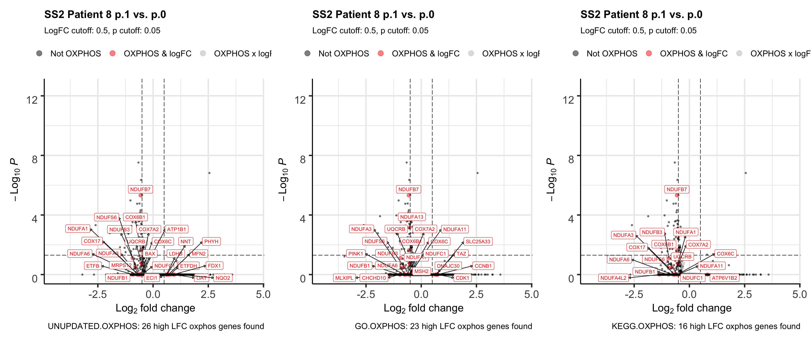
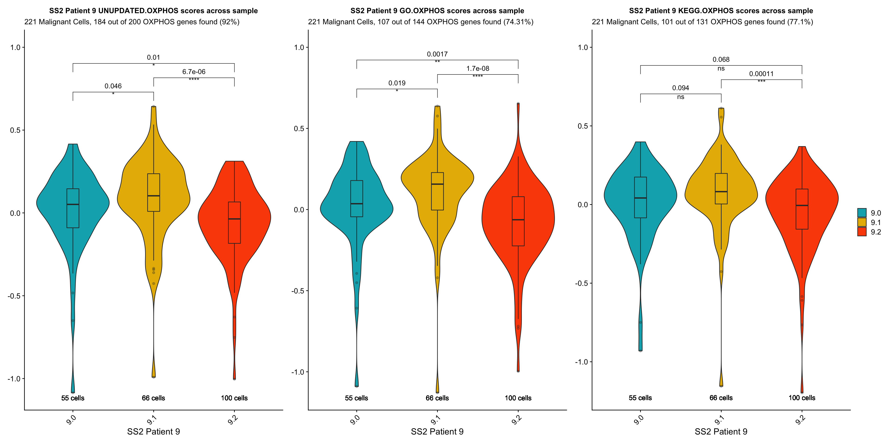
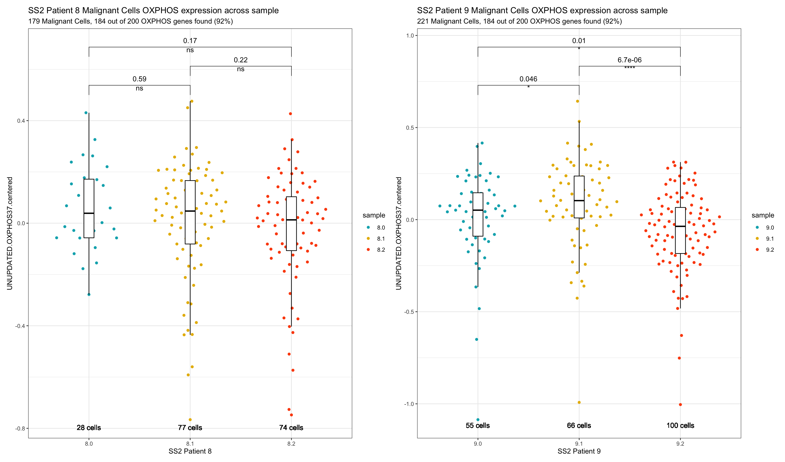
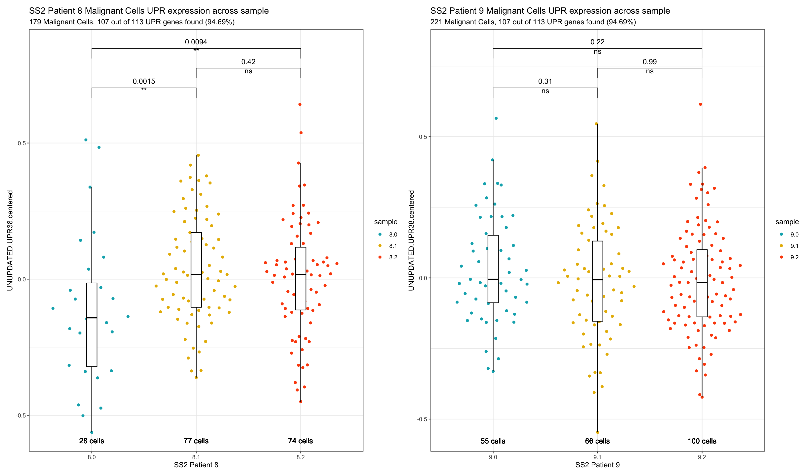
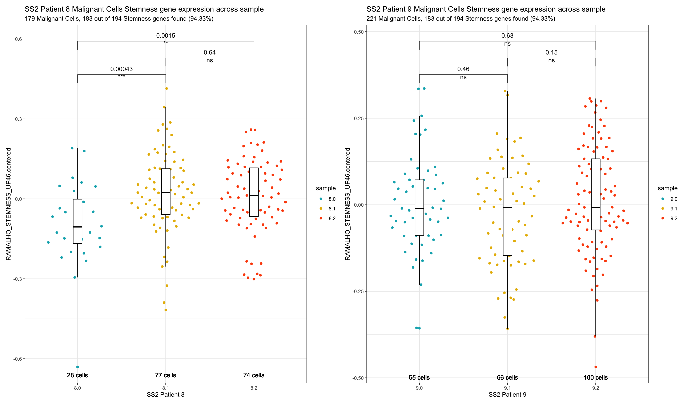

Izar 2020 SS2 (Cohort 2) DE Analysis
Jesslyn Goh and Mike Cuoco
7/20/2020
Last updated: 2020-08-19
Checks: 7 0
Knit directory: jesslyn_ovca/analysis/
This reproducible R Markdown analysis was created with workflowr (version 1.6.2). The Checks tab describes the reproducibility checks that were applied when the results were created. The Past versions tab lists the development history.
Great! Since the R Markdown file has been committed to the Git repository, you know the exact version of the code that produced these results.
Great job! The global environment was empty. Objects defined in the global environment can affect the analysis in your R Markdown file in unknown ways. For reproduciblity it’s best to always run the code in an empty environment.
The command set.seed(20200713) was run prior to running the code in the R Markdown file. Setting a seed ensures that any results that rely on randomness, e.g. subsampling or permutations, are reproducible.
Great job! Recording the operating system, R version, and package versions is critical for reproducibility.
Nice! There were no cached chunks for this analysis, so you can be confident that you successfully produced the results during this run.
Great job! Using relative paths to the files within your workflowr project makes it easier to run your code on other machines.
Great! You are using Git for version control. Tracking code development and connecting the code version to the results is critical for reproducibility.
The results in this page were generated with repository version 729ebf4. See the Past versions tab to see a history of the changes made to the R Markdown and HTML files.
Note that you need to be careful to ensure that all relevant files for the analysis have been committed to Git prior to generating the results (you can use wflow_publish or wflow_git_commit). workflowr only checks the R Markdown file, but you know if there are other scripts or data files that it depends on. Below is the status of the Git repository when the results were generated:
Ignored files:
Ignored: .DS_Store
Ignored: .Rhistory
Ignored: .Rproj.user/
Ignored: analysis/.DS_Store
Ignored: code/.DS_Store
Ignored: data/.DS_Store
Ignored: data/HTAPP/
Ignored: data/Izar_2020/
Ignored: data/gene_lists/.DS_Store
Ignored: data/gene_lists/extra/.DS_Store
Ignored: jesslyn_plots/
Ignored: mike_plots/
Ignored: old/.DS_Store
Ignored: old/edited/.DS_Store
Ignored: renv/.DS_Store
Ignored: renv/library/
Ignored: renv/python/
Ignored: renv/staging/
Ignored: vignettes/
Note that any generated files, e.g. HTML, png, CSS, etc., are not included in this status report because it is ok for generated content to have uncommitted changes.
These are the previous versions of the repository in which changes were made to the R Markdown (analysis/02.1_Izar2020_SS2_DEAnalysis.Rmd) and HTML (docs/02.1_Izar2020_SS2_DEAnalysis.html) files. If you’ve configured a remote Git repository (see ?wflow_git_remote), click on the hyperlinks in the table below to view the files as they were in that past version.
| File | Version | Author | Date | Message |
|---|---|---|---|---|
| Rmd | 729ebf4 | jgoh2 | 2020-08-19 | workflowr::wflow_publish(files = files) |
| html | 92568b8 | jgoh2 | 2020-08-17 | Build site. |
| Rmd | d60aeff | jgoh2 | 2020-08-17 | More DE Analysis of other hallmarks |
| html | 80345fe | jgoh2 | 2020-08-15 | Build site. |
| Rmd | b1ab47b | jgoh2 | 2020-08-15 | workflowr::wflow_publish(files = files) |
| html | 789982d | jgoh2 | 2020-08-14 | Build site. |
| Rmd | 2880f59 | jgoh2 | 2020-08-14 | workflowr::wflow_publish(files = files) |
| html | e05c328 | jgoh2 | 2020-08-12 | Build site. |
| html | 84edf85 | jgoh2 | 2020-08-12 | Build site. |
| Rmd | d504c59 | jgoh2 | 2020-08-12 | workflowr::wflow_publish(files = files) |
| html | a3ddf54 | jgoh2 | 2020-08-07 | Build site. |
| Rmd | 3e3db67 | jgoh2 | 2020-08-07 | workflowr::wflow_publish(files = files) |
| html | d801a7a | jgoh2 | 2020-08-04 | Build site. |
| html | 26f64a3 | jgoh2 | 2020-08-03 | Build site. |
| Rmd | eaa900e | jgoh2 | 2020-08-03 | workflowr::wflow_publish(files = files) |
| html | 2dc1bee | jgoh2 | 2020-07-31 | Build site. |
| Rmd | 284aad4 | jgoh2 | 2020-07-31 | workflowr::wflow_publish(files = files) |
| Rmd | c8bb9fc | jgoh2 | 2020-07-30 | PDX Exploratory + DE + Cell Cycle Analyses |
| html | 6be6c85 | jgoh2 | 2020-07-28 | Build site. |
| Rmd | cdd10f9 | jgoh2 | 2020-07-28 | SS2 DE Analysis |
| html | cdd10f9 | jgoh2 | 2020-07-28 | SS2 DE Analysis |
| Rmd | 35c7947 | jgoh2 | 2020-07-27 | SS2 Analysis Part 1 and 2 |
| Rmd | e27cfd1 | jgoh2 | 2020-07-22 | Moved files out of the analysis folder + AddModulescore in read_Izar_2020.R |
| Rmd | 527247a | jgoh2 | 2020-07-20 | Reorganize SS2 code and add to the analysis folder |
IZAR 2020 SS2 (COHORT 2) DATA DIFFERANTIAL EXPRESISON ANALYSIS
OVERVIEW
- The SS2 data from Izar2020 consists of cells from 14 ascites samples from 6 individuals:
- selected for malignant EPCAM+CD24+ cells by fluorophore-activated cell sorting into 96-well plates
- Includes both malignant and nonmalignant populations but differs from 10X data - examines malignant ascites more closely.
- We are only interested in the malignant ascites population, specifically samples from patient 8 and 9 because they are the only patients that have samples from different treatment statuses.
- In our 5-part analysis of the Izar 2020 SS2 data, we are interested in identifying differentially expressed genes and hallmark genesets between treatment statuses within patients 8 and 9
- We split our SS2 analysis into three parts:
- Load Data and Create SS2 Seurat Object
- The code to this part of our analysis is in the read_Izar_2020.R file in the code folder. During this part of our analysis we:
- Load in SS2 count matrix and Create Seurat Object
- Assign Metadata identities including:
- Patient ID
- Time
- Sample ID
- Treatment Status
- Score cells for cell cycle and hallmark genesets - Note: It does not matter whether we call AddModuleScore before or after subsetting and scaling each model because AddModuleScore uses the data slot.
- Save Seurat Object
- The code to this part of our analysis is in the read_Izar_2020.R file in the code folder. During this part of our analysis we:
- Process Data and Exploratory Data Analysis
- The code to this part of our analysis can be found in the 02_Izar2020_SS2_Load_Plots file in the old/edited folder. During this part of our analysis we:
- Load in SS2 Seurat Object from Part 1 and subset by patients 8 and 9. Continue analysis separately for each model.
- Scale and FindVariableFeatures (prepares data for dimensionality reduction)
- Dimensionality Reduction (PCA + UMAP)
- Save Seurat Objects
- The code to this part of our analysis can be found in the 02_Izar2020_SS2_Load_Plots file in the old/edited folder. During this part of our analysis we:
- Exploratory Data Analysis
- The code to this part of our analysis can be found in the 02.0_Izar2020_SS2_Exploratory Analysis file in the analysis folder. During this part of our analysis we:
- Load in SS2 Seurat Object from Part 2. Analyze separately for patients 8 and 9
- Compute summary metrics for SS2 data such as:
- Number of cells per patient per treatment
- Number of cells per treatment per cell cycle phase
- Visualize how cells separate based on metadata identities via UMAP and PCA - Intermodel heterogeneity: How do cells separate by sample? - Intramodel heterogeneity:
- How do cells separate by treament status / sample?
- How do cells separate by cell cycle phase?
- The code to this part of our analysis can be found in the 02.0_Izar2020_SS2_Exploratory Analysis file in the analysis folder. During this part of our analysis we:
- DE Analysis
- TYPE #1 DE ANALYSIS: Visualizing and Quantifying Differentially Expression on Predefined GO Genesets
- Violin Plots and UMAP
- Gene Set Enrichment Analysis (GSEA)
- TYPE #2 DE ANALYSIS: Finding DE Genes from scratch
- Volcano Plots
- TYPE #1 DE ANALYSIS: Visualizing and Quantifying Differentially Expression on Predefined GO Genesets
- CELL CYCLE ANALYSIS
- TYPE #1 CELL CYCLE ANALYSIS: Examine correlation between treatment condition and cell cycle phase
- Evaluate the idea that cell cycle might influence expression of signatures
- Load Data and Create SS2 Seurat Object
This is the third part of our 5-part analysis of the Izar 2020 SS2 (Cohort 2) data.
STEP 1 LOAD SEURAT OBJECT
# Load packages
source(here::here('packages.R'))
#Read in SS2 RDS object
SS2Malignant = readRDS(file = "data/Izar_2020/jesslyn_SS2Malignant_processed.RDS")
SS2Malignant.8 = readRDS(file = "data/Izar_2020/jesslyn_SS2Malignant8_processed.RDS")
SS2Malignant.9 = readRDS(file = "data/Izar_2020/jesslyn_SS2Malignant9_processed.RDS")
#Read in hallmarks of interest
hallmark_names = read_lines("data/gene_lists/hallmarks.txt")
hallmark.list <- vector(mode = "list", length = length(hallmark_names))
names(hallmark.list) <- hallmark_names
for(hm in hallmark_names){
if(file.exists(glue("data/gene_lists/hallmarks/{hm}_updated.txt"))){
file <- read_lines(glue("data/gene_lists/hallmarks/{hm}_updated.txt"), skip = 1)
hallmark.list[[hm]] <- file
}
else{
file <- read_lines(glue("data/gene_lists/extra/{hm}.txt"), skip =2)
hallmark.list[[hm]] <- file
}
}
#center module and cell cycle scores and reassign to the metadata of each Seurat object
hm.names <- names(SS2Malignant@meta.data)[14:61]
for(i in hm.names){
SS2Malignant.hm.centered <- scale(SS2Malignant[[i]], center = TRUE, scale = FALSE)
SS2Malignant <- AddMetaData(SS2Malignant, SS2Malignant.hm.centered, col.name = glue("{i}.centered"))
SS2Malignant8.hm.centered <- scale(SS2Malignant.8[[i]], center = TRUE, scale = FALSE)
SS2Malignant.8 <- AddMetaData(SS2Malignant.8, SS2Malignant8.hm.centered, col.name = glue("{i}.centered"))
SS2Malignant9.hm.centered <- scale(SS2Malignant.9[[i]], center = TRUE, scale = FALSE)
SS2Malignant.9 <- AddMetaData(SS2Malignant.9, SS2Malignant9.hm.centered, col.name = glue("{i}.centered"))
}STEP 2 DETERMINING OXPHOS GENESET
- Before doing any DE Analysis on the genesets, we investigate which of the three OXPHOS genesets we found is best for our data. Although we’ve investigated this for our PDX data, the geneset that is more suitable for SS2 may be different. The OXPHOS genesets that we test are listed as follows:
- Unupdated Version of HALLMARK_OXIDATIVE_PHOSPHORYLATION (200 genes) https://www.gsea-msigdb.org/gsea/msigdb/cards/HALLMARK_OXIDATIVE_PHOSPHORYLATION
- Updated Version of HALLMARK_OXIDATIVE_PHOSPHORYLATION (200 genes) https://www.gsea-msigdb.org/gsea/msigdb/cards/HALLMARK_OXIDATIVE_PHOSPHORYLATION
- GO_OXIDATIVE_PHOSPHORYLATION (144 genes) https://www.gsea-msigdb.org/gsea/msigdb/cards/GO_OXIDATIVE_PHOSPHORYLATION
- KEGG_OXIDATIVE_PHOSPHORYLATION (131 genes) https://www.gsea-msigdb.org/gsea/msigdb/cards/KEGG_OXIDATIVE_PHOSPHORYLATION
- We determine which geneset to use by asking these questions:
- How many and which genes are not found in the SS2 Seurat Object for each geneset?
- What makes the genesets different from each other? Which genes in each geneset are the most DE or have the higest logFC? Are they the same?
- Volcano Plot: Call FindMarkers on each model, plot onto Volcano Plot, label cells by each geneset
- Which geneset gives us the most statistically significant results?
- VlnPlot: Plot hallmark scores for each geneset group by treatment status for each model
- Label the VlnPlot with the number of genes found in SS2 Seurat Object for each OXPHOS geneset
ANSWERING QUESTION #1: How many and which genes are not found in the SS2 Seurat Object for each geneset?
hm.length.df <- data.frame(
"UNUPDATED.HM.OXPHOS" = length(hallmark.list[["UNUPDATED.OXPHOS"]]),
"HALLMARK.OXPHOS" = length(hallmark.list[["HALLMARK_OXIDATIVE_PHOSPHORYLATION"]]),
"GO.OXPHOS" = length(hallmark.list[["GO.OXPHOS"]]),
"KEGG.OXPHOS" = length(hallmark.list[["KEGG.OXPHOS"]])
)
Found.df <- data.frame(
"UNUPDATED.HM.OXPHOS" = sum((hallmark.list[["UNUPDATED.OXPHOS"]] %in% rownames(SS2Malignant))),
"HALLMARK.OXPHOS" = sum((hallmark.list[["HALLMARK_OXIDATIVE_PHOSPHORYLATION"]] %in% rownames(SS2Malignant))),
"GO.OXPHOS" = sum((hallmark.list[["GO.OXPHOS"]] %in% rownames(SS2Malignant))),
"KEGG.OXPHOS" = sum((hallmark.list[["KEGG.OXPHOS"]] %in% rownames(SS2Malignant)))
)
PFound.df <- data.frame(
"UNUPDATED.HM.OXPHOS" = (sum((hallmark.list[["UNUPDATED.OXPHOS"]] %in% rownames(SS2Malignant)))/length(hallmark.list[["UNUPDATED.OXPHOS"]]))*100,
"HALLMARK.OXPHOS" = (sum((hallmark.list[["HALLMARK_OXIDATIVE_PHOSPHORYLATION"]] %in% rownames(SS2Malignant)))/length(hallmark.list[["HALLMARK_OXIDATIVE_PHOSPHORYLATION"]])) * 100,
"GO.OXPHOS" = (sum((hallmark.list[["GO.OXPHOS"]] %in% rownames(SS2Malignant)))/length(hallmark.list[["GO.OXPHOS"]]))*100,
"KEGG.OXPHOS" = (sum((hallmark.list[["KEGG.OXPHOS"]] %in% rownames(SS2Malignant)))/length(hallmark.list[["KEGG.OXPHOS"]]))*100
)
NA.df <- data.frame(
"UNUPDATED.HM.OXPHOS" = sum(!(hallmark.list[["UNUPDATED.OXPHOS"]] %in% rownames(SS2Malignant))),
"HALLMARK.OXPHOS" = sum(!(hallmark.list[["HALLMARK_OXIDATIVE_PHOSPHORYLATION"]] %in% rownames(SS2Malignant))),
"GO.OXPHOS" = sum(!(hallmark.list[["GO.OXPHOS"]] %in% rownames(SS2Malignant))),
"KEGG.OXPHOS" = sum(!(hallmark.list[["KEGG.OXPHOS"]] %in% rownames(SS2Malignant)))
)
all.df <- rbind(hm.length.df, Found.df, PFound.df, NA.df)
rownames(all.df) <- c("NumGenes", "Found", "%Found", "Not Found")
all.df[,"GO.OXPHOS"] <- round(all.df[,"GO.OXPHOS"])
all.df[,"KEGG.OXPHOS"] <- round(all.df[,"KEGG.OXPHOS"])
all.df UNUPDATED.HM.OXPHOS HALLMARK.OXPHOS GO.OXPHOS KEGG.OXPHOS
NumGenes 200 200 144 131
Found 184 182 107 101
%Found 92 91 74 77
Not Found 16 18 37 30# IDENTIFY GENES THAT ARE NOT FOUND -----------
NA.genes.df <- vector("list", length = 4)
names <- c("UNUPDATED.OXPHOS", "HALLMARK_OXIDATIVE_PHOSPHORYLATION", "GO.OXPHOS", "KEGG.OXPHOS")
names(NA.genes.df) <- names
for(i in names){
NA.genes.df[[i]] <- (hallmark.list[[i]])[which(!(hallmark.list[[i]] %in% rownames(SS2Malignant)))]
}- OBSERVATIONS
- Similar to what we observed in the PDX data, the UNUPDATED.OXPHOS genelist actually has the most genes that are found in the SS2 object.
- Since the UNUPDATED.OXPHOS genelist works better than the updated version (HALLMARK_OXIDATIVE_PHOSPHORYLATION), we will continue our comparison of genesets using the UNUPDATED version.
- We now wonder:
- Which OXPHOS genes are the most DE (or have the highest logFC) if we call FindMarkers?
- Which geneset(s) do the most DE OXPHOS genes belong to?
ANSWERING QUESTION 2: Which genes in each geneset are the most DE? Are they the same?
- Used the wilcoxon rank sum test for FindMarkers
SS2s <- c(SS2Malignant.8, SS2Malignant.9)
SS2.names <- c("SS2 Patient 8", "SS2 Patient 9")
oxphos.hm <- c("UNUPDATED.OXPHOS", "GO.OXPHOS", "KEGG.OXPHOS")
SS2.hm.plots <- vector("list", length = 3)
names(SS2.hm.plots) <- SS2.names
SS2.markers <- vector("list", length = 3)
names(SS2.markers) <- SS2.names
SS2.markers[["SS2 Patient 8"]] <- FindMarkers(SS2Malignant.8, group.by = "sample", ident.1 = "8.1", ident.2 = "8.0", test.use = "wilcox", logfc.threshold = 0)
SS2.markers[["SS2 Patient 9"]] <- FindMarkers(SS2Malignant.9, group.by = "sample", ident.1 = "9.1", ident.2 = "9.0", test.use = "wilcox", logfc.threshold = 0)
for(i in 1:length(SS2s)){
SS2 <- SS2.names[[i]]
DF.hm.plot <- vector("list", length = 3)
names(DF.hm.plot) <- oxphos.hm
marker <- SS2.markers[[SS2]]
for(oxphos in oxphos.hm){
avgLFC <- rownames(marker[which(abs(marker$avg_logFC) > 0.5),])
keyvals <- ifelse(!(rownames(marker) %in% hallmark.list[[oxphos]]), 'black',
ifelse(abs(marker$avg_logFC) > 0.5, 'red', 'grey'))
names(keyvals)[keyvals == 'red'] <- 'OXPHOS & logFC'
names(keyvals)[keyvals == 'grey'] <- 'OXPHOS x logFC'
names(keyvals)[keyvals == 'black'] <- 'Not OXPHOS'
found = length(avgLFC[which(avgLFC %in% hallmark.list[[oxphos]])])
p <- EnhancedVolcano(marker,
lab = rownames(marker),
selectLab = avgLFC[which(avgLFC %in% hallmark.list[[oxphos]])],
labCol = "red",
x='avg_logFC', y='p_val_adj', pCutoff = 0.05,
FCcutoff = 0.5,
colCustom = keyvals,
pointSize = c(ifelse(rownames(marker) %in% hallmark.list[[oxphos]], 2.5,1)),
drawConnectors = TRUE,
boxedLabels = TRUE,
labvjust = 1,
title= glue("{SS2} p.1 vs. p.0"), subtitle= "LogFC cutoff: 0.5, p cutoff: 0.05",
caption = glue("{oxphos}: {found} high LFC oxphos genes found")
)
DF.hm.plot[[oxphos]] <- p
}
SS2.hm.plots[[SS2]] <- DF.hm.plot[["UNUPDATED.OXPHOS"]] + DF.hm.plot[["GO.OXPHOS"]] + DF.hm.plot[["KEGG.OXPHOS"]]
}
SS2.hm.plots[["SS2 Patient 8"]]
SS2.hm.plots[["SS2 Patient 9"]]
# number of DE oxphos genes found in each geneset within each model -----------------
P8.de.df <- data.frame(
"UNUPDATED.HM.OXPHOS" = sum(rownames(SS2.markers[["SS2 Patient 8"]][which(abs(SS2.markers[["SS2 Patient 8"]]$avg_logFC) > 0.5),]) %in% hallmark.list[["UNUPDATED.OXPHOS"]]),
"GO.OXPHOS" = sum(rownames(SS2.markers[["SS2 Patient 8"]][which(abs(SS2.markers[["SS2 Patient 8"]]$avg_logFC) > 0.5),]) %in% hallmark.list[["GO.OXPHOS"]]),
"KEGG.OXPHOS" = sum(rownames(SS2.markers[["SS2 Patient 8"]][which(abs(SS2.markers[["SS2 Patient 8"]]$avg_logFC) > 0.5),]) %in% hallmark.list[["KEGG.OXPHOS"]])
)
P9.de.df <- data.frame(
"UNUPDATED.HM.OXPHOS" = sum(rownames(SS2.markers[["SS2 Patient 9"]][which(abs(SS2.markers[["SS2 Patient 9"]]$avg_logFC) > 0.5),]) %in% hallmark.list[["UNUPDATED.OXPHOS"]]),
"GO.OXPHOS" = sum(rownames(SS2.markers[["SS2 Patient 9"]][which(abs(SS2.markers[["SS2 Patient 9"]]$avg_logFC) > 0.5),]) %in% hallmark.list[["GO.OXPHOS"]]),
"KEGG.OXPHOS" = sum(rownames(SS2.markers[["SS2 Patient 9"]][which(abs(SS2.markers[["SS2 Patient 9"]]$avg_logFC) > 0.5),]) %in% hallmark.list[["KEGG.OXPHOS"]])
)
all.de.df <- rbind(P8.de.df, P9.de.df)
rownames(all.de.df) <- c("P8.1vs8.0", "P9.1vs9.0")
all.de.df UNUPDATED.HM.OXPHOS GO.OXPHOS KEGG.OXPHOS
P8.1vs8.0 26 23 16
P9.1vs9.0 5 3 1percent.logFC <- data.frame(
"UNUPDATED.HM.OXPHOS" = round(all.de.df[, "UNUPDATED.HM.OXPHOS"]/all.df["Found", "UNUPDATED.HM.OXPHOS"]*100, 2),
"GO.OXPHOS" = round(all.de.df[, "GO.OXPHOS"]/all.df["Found", "GO.OXPHOS"]*100, 2),
"KEGG.OXPHOS" = round(all.de.df[, "KEGG.OXPHOS"]/all.df["Found", "KEGG.OXPHOS"]*100, 2)
)
rownames(percent.logFC) <- c("P8 %Found highLFC", "P9 %Found highLFC")
rbind(all.df[,names(all.df) != "HALLMARK.OXPHOS"], percent.logFC) UNUPDATED.HM.OXPHOS GO.OXPHOS KEGG.OXPHOS
NumGenes 200.00 144.0 131.00
Found 184.00 107.0 101.00
%Found 92.00 74.0 77.00
Not Found 16.00 37.0 30.00
P8 %Found highLFC 14.13 21.5 15.84
P9 %Found highLFC 2.72 2.8 0.99- OBSERVATIONS
- UNUPDATED.OXPHOS geneset consistently has the most number OXPHOS genes with high logFC (logFC > 0.5, regardless of padj) relative to the other two genesets for each model comparison between MRD and vehicle. However, GO.OXPHOS actually has the highest percentage of OXPHOS genes with high logFC out of the OXPHOS genes Found.
- Although it seems that there are a few overlaps of OXPHOS genes found, it is hard to visualize which ones overlap, and whether the ones that overlap are among the top DE genes (regardless of padj). We therefore create tables for each model, extract 5 genes with the highest logFC from each geneset and compare if they’re the same.
p8.top5 <- SS2.markers[["SS2 Patient 8"]] %>% arrange(-abs(avg_logFC))
p9.top5 <- SS2.markers[["SS2 Patient 9"]] %>% arrange(-abs(avg_logFC))
p8.gs.df <- data.frame(
"UNUPDATED.OXPHOS" = head(rownames(p8.top5)[which(rownames(p8.top5) %in% hallmark.list[["UNUPDATED.OXPHOS"]])], 5),
"UNUPDATED.OXPHOS" = select(p8.top5[head(rownames(p8.top5)[which(rownames(p8.top5) %in% hallmark.list[["UNUPDATED.OXPHOS"]])], 5),], avg_logFC),
"GO.OXPHOS" = head(rownames(p8.top5)[which(rownames(p8.top5) %in% hallmark.list[["GO.OXPHOS"]])], 5),
"GO.OXPHOS" = select(p8.top5[head(rownames(p8.top5)[which(rownames(p8.top5) %in% hallmark.list[["GO.OXPHOS"]])], 5),], avg_logFC),
"KEGG.OXPHOS" = head(rownames(p8.top5)[which(rownames(p8.top5) %in% hallmark.list[["KEGG.OXPHOS"]])], 5),
"KEGG.OXPHOS" = select(p8.top5[head(rownames(p8.top5)[which(rownames(p8.top5) %in% hallmark.list[["KEGG.OXPHOS"]])], 5),], avg_logFC)
)
rownames(p8.gs.df) <- seq(from = 1, length = nrow(p8.gs.df))
p9.gs.df <- data.frame(
"UNUPDATED.OXPHOS" = head(rownames(p9.top5)[which(rownames(p9.top5) %in% hallmark.list[["UNUPDATED.OXPHOS"]])], 5),
"UNUPDATED.OXPHOS" = select(p9.top5[head(rownames(p9.top5)[which(rownames(p9.top5) %in% hallmark.list[["UNUPDATED.OXPHOS"]])], 5),], avg_logFC),
"GO.OXPHOS" = head(rownames(p9.top5)[which(rownames(p9.top5) %in% hallmark.list[["GO.OXPHOS"]])], 5),
"GO.OXPHOS" = select(p9.top5[head(rownames(p9.top5)[which(rownames(p9.top5) %in% hallmark.list[["GO.OXPHOS"]])], 5),], avg_logFC),
"KEGG.OXPHOS" = head(rownames(p9.top5)[which(rownames(p9.top5) %in% hallmark.list[["KEGG.OXPHOS"]])], 5),
"KEGG.OXPHOS" = select(p9.top5[head(rownames(p9.top5)[which(rownames(p9.top5) %in% hallmark.list[["KEGG.OXPHOS"]])], 5),], avg_logFC)
)
rownames(p9.gs.df) <- seq(from = 1, length = nrow(p9.gs.df))
p8.gs.df UNUPDATED.OXPHOS avg_logFC GO.OXPHOS avg_logFC.1 KEGG.OXPHOS avg_logFC.2
1 NQO2 1.2232801 MLXIPL -1.4084023 NDUFA4L2 -1.3529251
2 OAT 0.9683255 CHCHD10 -0.9787089 NDUFB1 -0.9501970
3 NDUFB1 -0.9501970 NDUFB1 -0.9501970 NDUFA3 -0.9273634
4 NDUFA3 -0.9273634 NDUFA3 -0.9273634 NDUFB3 -0.9247449
5 NDUFB3 -0.9247449 NDUFB3 -0.9247449 ATP6V1B2 0.8188562p9.gs.df UNUPDATED.OXPHOS avg_logFC GO.OXPHOS avg_logFC.1 KEGG.OXPHOS avg_logFC.2
1 SLC25A20 0.9290268 SLC25A33 -0.9222536 ATP6V1B1 0.6114638
2 RHOT1 0.8159080 SURF1 0.6201898 ATP6V0A4 -0.4970007
3 MTRF1 0.6758994 DNAJC15 -0.5914836 NDUFA4L2 -0.3899799
4 SURF1 0.6201898 COQ9 0.4983459 ATP6V0A2 -0.3867169
5 MTRR 0.6044816 ISCU 0.4919133 ATP6V0A1 -0.3449714- OBSERVATIONS
- Note: All of these top 5 OXPHOS genes (logFC > 0.5) have a padj of 1.00
- There are quite a few overlaps of OXPHOS genes with high LFC across all three genesets for both patient 8 and 9
- The UNUPDATED.OXPHOS and the GO.OXPHOS genesets both seem to have top OXPHOS genes with higher logFC values relative to KEGG.OXPHOS
- Our answers to QUESTION #1 and #2 seem to suggest that UNUPDATED.OXPHOS hallmark geneset is the best our of all the genesets tested because:
- It has the least number of genes that are not found within the SS2 Seurat Object, and the highest percentage of genes that are found.
- It has OXPHOS genes with the highest LFC (logFC > 0.5, regardless of padj) relative to the other two genesets for each model comparison between MRD and vehicle
- The high LFC OXPHOS genes present within this geneset have relatively higher logFC values (regardless of padj) in comparison to the high LFC OXPHOS genes present in the other two genesets, especially KEGG.
- We answer our 3rd question to confirm whether the UNUPDATED.OXPHOS geneset is indeed the most appropriate one for our data relative to the other two genesets.
ANSWERING QUESTION #3: which geneset gives us the most statistically significant results
oxphos.centered <- c("UNUPDATED.OXPHOS37.centered", "GO.OXPHOS35.centered", "KEGG.OXPHOS36.centered")
SS2.Oxphos.Vln.plots <- vector("list", length(SS2s))
names(SS2.Oxphos.Vln.plots) <- SS2.names
patient <- c("8", "9")
for (i in 1:length(SS2s)){
obj <- SS2s[[i]]
name <- SS2.names[[i]]
numCells <- nrow(SS2s[[i]]@meta.data)
my_comparisons <- list(
c(glue("{patient[[i]]}.0"), glue("{patient[[i]]}.1")),
c(glue("{patient[[i]]}.1"), glue("{patient[[i]]}.2")),
c(glue("{patient[[i]]}.0"), glue("{patient[[i]]}.2"))
)
if(patient[[i]] == "8"){
p <- VlnPlot(obj, features = oxphos.centered, group.by = "sample", pt.size = 0, combine = F, cols = c("#00AFBB", "#E7B800", "#FC4E07"), y.max = 0.7)
}
else{
p <- VlnPlot(obj, features = oxphos.centered, group.by = "sample", pt.size = 0, combine = F, cols = c("#00AFBB", "#E7B800", "#FC4E07"), y.max = 1.0)
}
unupdated.found <- sum(hallmark.list[["UNUPDATED.OXPHOS"]] %in% rownames(obj))
unupdated.length <- length(hallmark.list[["UNUPDATED.OXPHOS"]])
unupdated.pFound <- round((unupdated.found / unupdated.length)*100, 2)
p[[1]] <- p[[1]] + labs(title = glue("{name} UNUPDATED.OXPHOS scores across sample"), x = name, subtitle = glue("{numCells} Malignant Cells, {unupdated.found} out of {unupdated.length} OXPHOS genes found ({unupdated.pFound}%)")) +
theme(plot.title = element_text(size = 12), plot.caption = element_text(size = 10)) +
geom_boxplot(width = 0.15, position = position_dodge(0.9), alpha = 0.3, show.legend = F) +
geom_text(label = paste(sum(str_detect(obj$sample, "[:digit:].0")), "cells"), x = glue("{patient[[i]]}.0"), y = min(obj$UNUPDATED.OXPHOS37.centered) -0.03) +
geom_text(label = paste(sum(str_detect(obj$sample, "[:digit:].1")), "cells"), x = glue("{patient[[i]]}.1"), y = min(obj$UNUPDATED.OXPHOS37.centered) - 0.03) +
geom_text(label = paste(sum(str_detect(obj$sample, "[:digit:].2")), "cells"), x = glue("{patient[[i]]}.2"), y = min(obj$UNUPDATED.OXPHOS37.centered) - 0.03) +
stat_compare_means(comparisons = my_comparisons, method = "wilcox.test", label = "p.format", step.increase = 0.05) +
stat_compare_means(comparisons = my_comparisons, method = "wilcox.test", label = "p.signif", step.increase = 0.05, bracket.size = 0, vjust = 1.8)
GO.found <- sum(hallmark.list[["GO.OXPHOS"]] %in% rownames(obj))
GO.length <- length(hallmark.list[["GO.OXPHOS"]])
GO.pFound <- round((GO.found / GO.length)*100,2)
p[[2]] <- p[[2]] + labs(title = glue("{name} GO.OXPHOS scores across sample"), x = name, subtitle = glue("{numCells} Malignant Cells, {GO.found} out of {GO.length} OXPHOS genes found ({GO.pFound}%)")) +
theme(plot.title = element_text(size = 12), plot.caption = element_text(size = 10)) +
geom_boxplot(width = 0.15, position = position_dodge(0.9), alpha = 0.3, show.legend = F) +
geom_text(label = paste(sum(str_detect(obj$sample, "[:digit:].0")), "cells"), x = glue("{patient[[i]]}.0"), y = min(obj$GO.OXPHOS35.centered) -0.03) +
geom_text(label = paste(sum(str_detect(obj$sample, "[:digit:].1")), "cells"), x = glue("{patient[[i]]}.1"), y = min(obj$GO.OXPHOS35.centered) - 0.03) +
geom_text(label = paste(sum(str_detect(obj$sample, "[:digit:].2")), "cells"), x = glue("{patient[[i]]}.2"), y = min(obj$GO.OXPHOS35.centered) - 0.03) +
stat_compare_means(comparisons = my_comparisons, method = "wilcox.test", label = "p.format", step.increase = 0.05) +
stat_compare_means(comparisons = my_comparisons, method = "wilcox.test", label = "p.signif", step.increase = 0.05, bracket.size = 0, vjust = 1.8)
KEGG.found <- sum(hallmark.list[["KEGG.OXPHOS"]] %in% rownames(obj))
KEGG.length <- length(hallmark.list[["KEGG.OXPHOS"]])
KEGG.pFound <- round((KEGG.found / KEGG.length)*100,2)
p[[3]] <- p[[3]] + labs(title = glue("{name} KEGG.OXPHOS scores across sample"), x = name, subtitle = glue("{numCells} Malignant Cells, {KEGG.found} out of {KEGG.length} OXPHOS genes found ({KEGG.pFound}%)")) +
theme(plot.title = element_text(size = 12), plot.caption = element_text(size = 10)) +
geom_boxplot(width = 0.15, position = position_dodge(0.9), alpha = 0.3, show.legend = F) +
geom_text(label = paste(sum(str_detect(obj$sample, "[:digit:].0")), "cells"), x = glue("{patient[[i]]}.0"), y = min(obj$KEGG.OXPHOS36.centered) -0.03) +
geom_text(label = paste(sum(str_detect(obj$sample, "[:digit:].1")), "cells"), x = glue("{patient[[i]]}.1"), y = min(obj$KEGG.OXPHOS36.centered) - 0.03) +
geom_text(label = paste(sum(str_detect(obj$sample, "[:digit:].2")), "cells"), x = glue("{patient[[i]]}.2"), y = min(obj$KEGG.OXPHOS36.centered) - 0.03) +
stat_compare_means(comparisons = my_comparisons, method = "wilcox.test", label = "p.format", step.increase = 0.05) +
stat_compare_means(comparisons = my_comparisons, method = "wilcox.test", label = "p.signif", step.increase = 0.05, bracket.size = 0, vjust = 1.8)
p <- p[[1]] + p[[2]] + p[[3]] + plot_layout(guides= 'collect')
SS2.Oxphos.Vln.plots[[name]] <- p
}
SS2.Oxphos.Vln.plots[["SS2 Patient 8"]]
SS2.Oxphos.Vln.plots[["SS2 Patient 9"]]
- OBSERVATIONS
- The overall trend we see between treatment groups within each model is the same across all three oxphos genesets. However, it seems like the difference in scores is most obvious/drastic when using the KEGG geneset.
- Statistical tests show us that while KEGG gives us the most statistically significant results in Patient 8 and UNUPDATED gives us the most statistically significant results in Patient 9, the GO geneset is actually the most consistent, giving us statistically signifcant results in both patients.
- CONCLUSIONS
- Although the UNUPDATED seems like the most suitable one for criteria 1 and 2, the GO geneset gives us the best result for the 3rd criterion:
- Question 1: GO has the most number of unfound genes in the SS2 object. However:
- Question 2: It has a pretty close tie in comparison to the UNUPDATED geneset, where they had similar numbers of high LFC OXPHOS genes present from FindMarkers, and the top high LFC OXPHOS genes in both genesets have comparable logFC.
- Question 3: GO gives us statistically significant results in both patients.
- Although the UNUPDATED seems like the most suitable one for criteria 1 and 2, the GO geneset gives us the best result for the 3rd criterion:
Therefore, considering these three criteria, we decide that the GO geneset is best for our SS2 data.
SUMMARY STATISTICS
#Patient 8 ---------------------------------
SS2Malignant8.0 <- subset(SS2Malignant.8, subset = (sample == "8.0"))
SS2Malignant8.1 <- subset(SS2Malignant.8, subset = (sample == "8.1"))
SS2Malignant8.2 <- subset(SS2Malignant.8, subset = (sample == "8.2"))
SS2M8.uhm.oxphos.df <- data.frame(
"p.0vsp.1" = wilcox.test(SS2Malignant8.0$UNUPDATED.OXPHOS37.centered, SS2Malignant8.1$UNUPDATED.OXPHOS37.centered)$p.value,
"p.1vsp.2" = wilcox.test(SS2Malignant8.1$UNUPDATED.OXPHOS37.centered, SS2Malignant8.2$UNUPDATED.OXPHOS37.centered)$p.value,
"p.0vsp.2" = wilcox.test(SS2Malignant8.0$UNUPDATED.OXPHOS37.centered, SS2Malignant8.2$UNUPDATED.OXPHOS37.centered)$p.value
)
SS2M8.go.oxphos.df <- data.frame(
"p.0vsp.1" = wilcox.test(SS2Malignant8.0$GO.OXPHOS35.centered, SS2Malignant8.1$GO.OXPHOS35.centered)$p.value,
"p.1vsp.2" = wilcox.test(SS2Malignant8.1$GO.OXPHOS35.centered, SS2Malignant8.2$GO.OXPHOS35.centered)$p.value,
"p.0vsp.2" = wilcox.test(SS2Malignant8.0$GO.OXPHOS35.centered, SS2Malignant8.2$GO.OXPHOS35.centered)$p.value
)
SS2M8.kegg.oxphos.df <- data.frame(
"p.0vsp.1" = wilcox.test(SS2Malignant8.0$KEGG.OXPHOS36.centered, SS2Malignant8.1$KEGG.OXPHOS36.centered)$p.value,
"p.1vsp.2" = wilcox.test(SS2Malignant8.1$KEGG.OXPHOS36.centered, SS2Malignant8.2$KEGG.OXPHOS36.centered)$p.value,
"p.0vsp.2" = wilcox.test(SS2Malignant8.0$KEGG.OXPHOS36.centered, SS2Malignant8.2$KEGG.OXPHOS36.centered)$p.value
)
#Patient 9 ---------------------------------
SS2Malignant9.0 <- subset(SS2Malignant.9, subset = (sample == "9.0"))
SS2Malignant9.1 <- subset(SS2Malignant.9, subset = (sample == "9.1"))
SS2Malignant9.2 <- subset(SS2Malignant.9, subset = (sample == "9.2"))
SS2M9.uhm.oxphos.df <- data.frame(
"p.0vsp.1" = wilcox.test(SS2Malignant9.0$UNUPDATED.OXPHOS37.centered, SS2Malignant9.1$UNUPDATED.OXPHOS37.centered)$p.value,
"p.1vsp.2" = wilcox.test(SS2Malignant9.1$UNUPDATED.OXPHOS37.centered, SS2Malignant9.2$UNUPDATED.OXPHOS37.centered)$p.value,
"p.0vsp.2" = wilcox.test(SS2Malignant9.0$UNUPDATED.OXPHOS37.centered, SS2Malignant9.2$UNUPDATED.OXPHOS37.centered)$p.value
)
SS2M9.go.oxphos.df <- data.frame(
"p.0vsp.1" = wilcox.test(SS2Malignant9.0$GO.OXPHOS35.centered, SS2Malignant9.1$GO.OXPHOS35.centered)$p.value,
"p.1vsp.2" = wilcox.test(SS2Malignant9.1$GO.OXPHOS35.centered, SS2Malignant9.2$GO.OXPHOS35.centered)$p.value,
"p.0vsp.2" = wilcox.test(SS2Malignant9.0$GO.OXPHOS35.centered, SS2Malignant9.2$GO.OXPHOS35.centered)$p.value
)
SS2M9.kegg.oxphos.df <- data.frame(
"p.0vsp.1" = wilcox.test(SS2Malignant9.0$KEGG.OXPHOS36.centered, SS2Malignant9.1$KEGG.OXPHOS36.centered)$p.value,
"p.1vsp.2" = wilcox.test(SS2Malignant9.1$KEGG.OXPHOS36.centered, SS2Malignant9.2$KEGG.OXPHOS36.centered)$p.value,
"p.0vsp.2" = wilcox.test(SS2Malignant9.0$KEGG.OXPHOS36.centered, SS2Malignant9.2$KEGG.OXPHOS36.centered)$p.value
)
#combine ------------------------------
hm.oxphos.DF <- rbind(SS2M8.uhm.oxphos.df, SS2M9.uhm.oxphos.df)
rownames(hm.oxphos.DF) <- c("HM.OXPHOS.P8", "HM.OXPHOS.P9")
go.oxphos.DF <- rbind(SS2M8.go.oxphos.df, SS2M9.go.oxphos.df)
rownames(go.oxphos.DF) <- c("GO.OXPHOS.P8", "GO.OXPHOS.P9")
kegg.oxphos.DF <- rbind(SS2M8.kegg.oxphos.df, SS2M9.kegg.oxphos.df)
rownames(kegg.oxphos.DF) <- c("KEGG.OXPHOS.P8", "KEGG.OXPHOS.P9")
all.oxphos.DF <- rbind(hm.oxphos.DF, go.oxphos.DF, kegg.oxphos.DF)
DT::datatable(all.oxphos.DF) %>%
DT::formatSignif(names(all.oxphos.DF), digits = 2) %>%
DT::formatStyle(names(all.oxphos.DF), color = DT::styleInterval(0.05, c('red', 'black')))We also tested how the UNUPDATED version of HALLMARK_UNFOLDED_PROTEIN_RESPONSE differs from the updated version.
upr.length.df <- data.frame(
"UNUPDATED.HM.UPR" = length(hallmark.list[["UNUPDATED.UPR"]]),
"HALLMARK.UPR" = length(hallmark.list[["HALLMARK_UNFOLDED_PROTEIN_RESPONSE"]])
)
Found.upr.df <- data.frame(
"UNUPDATED.HM.UPR" = sum((hallmark.list[["UNUPDATED.UPR"]] %in% rownames(SS2Malignant))),
"HALLMARK.UPR" = sum((hallmark.list[["HALLMARK_UNFOLDED_PROTEIN_RESPONSE"]] %in% rownames(SS2Malignant)))
)
PFound.upr.df <- data.frame(
"UNUPDATED.HM.UPR" = (sum((hallmark.list[["UNUPDATED.UPR"]] %in% rownames(SS2Malignant)))/length(hallmark.list[["UNUPDATED.UPR"]]))*100,
"HALLMARK.UPR" = (sum((hallmark.list[["HALLMARK_UNFOLDED_PROTEIN_RESPONSE"]] %in% rownames(SS2Malignant)))/length(hallmark.list[["HALLMARK_UNFOLDED_PROTEIN_RESPONSE"]])) * 100
)
upr.df <- rbind(upr.length.df, Found.upr.df, PFound.upr.df)
upr.df[,"UNUPDATED.HM.UPR"] <- round(upr.df[,"UNUPDATED.HM.UPR"])
upr.df[,"HALLMARK.UPR"] <- round(upr.df[,"HALLMARK.UPR"])
rownames(upr.df) <- c("Num UPR Genes", "Num Found", "% Found")
upr.df UNUPDATED.HM.UPR HALLMARK.UPR
Num UPR Genes 113 113
Num Found 107 105
% Found 95 93- Since the UNUPDATED version identifies two more genes than the updated version, we decide to proceed with the UNUPDATED.UPR geneset.
After deciding the geneset to use for our data, we can now analyze the differential expression of OXPHOS and UPR genes across treatment condition within each model: - OXPHOS: GO_OXIDATIVE_PHOSPHORYLATION geneset - UPR: unupdated HALLMARK_UNFOLDED_PROTEIN_RESPONSE geneset
STEP 3 DE ANALYSIS #1. VISUALIZING AND QUANTIFYING DE HALLMARK GENESETS
- QUESTION Are modules (OXPHOS and UPR) differentially expressed across treatment conditions within each patient?
- HYPOTHESIS We hypothesize that the on-treatment time-points (p.1 and p.2) will express enriched levels of OXPHOS and UPR hallmarks relative to cells treatment-naive time-point (p.0). We are not so sure what to expect between p.1 and p.2 on-treatment samples because we are not told how the two samples are different in terms of their treatment status.
- APPROACH #1 Violin Plots and UMAP
- Visualize differences in hallmark score across treatment conditions with:
- Violin Plot (center module scores at 0)
- Statistical test (wilcoxon rank sum test): is the difference in hallmark score across treatment conditions statistically significant?
- Visualize differences in hallmark score across treatment conditions with:
- APPROACH #1 Violin Plots and UMAP
hms.centered = c("GO.OXPHOS35.centered", "UNUPDATED.UPR38.centered")
#SWARM PLOTS
#OXPHOS ----------
oxphos.swarm.plots <- vector("list", length = 2)
names(oxphos.swarm.plots) <- SS2.names
patient <- c("8", "9")
for(i in 1:2){
SS2 <- SS2s[[i]]
SS2.name <- SS2.names[[i]]
my_comparisons <- list(
c(glue("{patient[[i]]}.0"), glue("{patient[[i]]}.1")),
c(glue("{patient[[i]]}.1"), glue("{patient[[i]]}.2")),
c(glue("{patient[[i]]}.0"), glue("{patient[[i]]}.2"))
)
feature.found <- sum(hallmark.list[["UNUPDATED.OXPHOS"]] %in% rownames(SS2))
feature.length <- length(hallmark.list[["UNUPDATED.OXPHOS"]])
feature.pFound <- round((feature.found / feature.length)*100, 2)
numCells <- nrow(SS2@meta.data)
p <- ggplot(SS2@meta.data, aes(x= sample , y = UNUPDATED.OXPHOS37.centered, color = sample)) +
geom_quasirandom(groupOnX =TRUE) +
theme_bw() +
scale_color_manual(values = c("#00AFBB", "#E7B800", "#FC4E07")) +
labs(title = glue("{SS2.name} Malignant Cells OXPHOS expression across sample"), x = SS2.name, subtitle = glue("{numCells} Malignant Cells, {feature.found} out of {feature.length} OXPHOS genes found ({feature.pFound}%)")) +
geom_boxplot(width = 0.10, position = position_dodge(0.9), alpha = 1, show.legend = F, color = "black", outlier.alpha = 0) +
geom_text(label = paste(sum(str_detect(SS2$sample, "[:digit:].0")), "cells"), x = glue("{patient[[i]]}.0"), y = min(SS2$UNUPDATED.OXPHOS37.centered) -0.03, color = "black", show.legend = FALSE) +
geom_text(label = paste(sum(str_detect(SS2$sample, "[:digit:].1")), "cells"), x = glue("{patient[[i]]}.1"), y = min(SS2$UNUPDATED.OXPHOS37.centered) - 0.03, color = "black", show.legend = FALSE) +
geom_text(label = paste(sum(str_detect(SS2$sample, "[:digit:].2")), "cells"), x = glue("{patient[[i]]}.2"), y = min(SS2$UNUPDATED.OXPHOS37.centered) - 0.03, color = "black", show.legend = FALSE) +
stat_compare_means(comparisons = my_comparisons, method = "wilcox.test", label = "p.format", step.increase = 0.06) +
stat_compare_means(comparisons = my_comparisons, method = "wilcox.test", label = "p.signif", step.increase = 0.06, bracket.size = 0, vjust = 1.8)
oxphos.swarm.plots[[SS2.name]] <- p
}
oxphos.swarm.plots[["SS2 Patient 8"]] + oxphos.swarm.plots[["SS2 Patient 9"]]
#UPR ----------
upr.swarm.plots <- vector("list", length = 2)
names(upr.swarm.plots) <- SS2.names
for(i in 1:2){
SS2 <- SS2s[[i]]
SS2.name <- SS2.names[[i]]
my_comparisons <- list(
c(glue("{patient[[i]]}.0"), glue("{patient[[i]]}.1")),
c(glue("{patient[[i]]}.1"), glue("{patient[[i]]}.2")),
c(glue("{patient[[i]]}.0"), glue("{patient[[i]]}.2"))
)
feature.found <- sum(hallmark.list[["UNUPDATED.UPR"]] %in% rownames(SS2))
feature.length <- length(hallmark.list[["UNUPDATED.UPR"]])
feature.pFound <- round((feature.found / feature.length)*100, 2)
numCells <- nrow(SS2@meta.data)
p <- ggplot(SS2@meta.data, aes(x= sample , y = UNUPDATED.UPR38.centered, color = sample)) +
geom_quasirandom(groupOnX =TRUE) +
theme_bw() +
scale_color_manual(values = c("#00AFBB", "#E7B800", "#FC4E07")) +
labs(title = glue("{SS2.name} Malignant Cells UPR expression across sample"), x = SS2.name, subtitle = glue("{numCells} Malignant Cells, {feature.found} out of {feature.length} UPR genes found ({feature.pFound}%)")) +
geom_boxplot(width = 0.10, position = position_dodge(0.9), alpha = 1, show.legend = F, color = "black", outlier.alpha = 0) +
geom_text(label = paste(sum(str_detect(SS2$sample, "[:digit:].0")), "cells"), x = glue("{patient[[i]]}.0"), y = min(SS2$UNUPDATED.UPR38.centered) -0.03, color = "black", show.legend = FALSE) +
geom_text(label = paste(sum(str_detect(SS2$sample, "[:digit:].1")), "cells"), x = glue("{patient[[i]]}.1"), y = min(SS2$UNUPDATED.UPR38.centered) - 0.03, color = "black", show.legend = FALSE) +
geom_text(label = paste(sum(str_detect(SS2$sample, "[:digit:].2")), "cells"), x = glue("{patient[[i]]}.2"), y = min(SS2$UNUPDATED.UPR38.centered) - 0.03, color = "black", show.legend = FALSE) +
stat_compare_means(comparisons = my_comparisons, method = "wilcox.test", label = "p.format", step.increase = 0.06) +
stat_compare_means(comparisons = my_comparisons, method = "wilcox.test", label = "p.signif", step.increase = 0.06, bracket.size = 0, vjust = 1.8)
upr.swarm.plots[[SS2.name]] <- p
}
upr.swarm.plots[["SS2 Patient 8"]] + upr.swarm.plots[["SS2 Patient 9"]]
- CONCLUSIONS
- The statistically significant results are (p < 0.05):
- Patient 8
- OXPHOS: Sample 8.0 > 8.1 ; 8.0 > 8.2 (does not support our hypothesis)
- UPR: Sample 8.2 > 8.0 ; 8.1 > 8.0 (supports our hypothesis)
- Patient 9
- OXPHOS: Sample 9.1 > 9.2 ; 9.1 > 9.0 (supports our hypothesis) ; 9.0 > 9.2 (does not support our hypothesis)
- Patient 8
- The trends that support our hypothesis for both OXPHOS and UPR are not consistent across patients 8 and 9. Since our sample size is so small, we’re also not sure how representative this data is of the true population.
- We are, however, not sure how to compare between p.1 vs. p.2 because they are both categorized as “on-treatment” and the clinical status of samples obtained from patients 8 and 9 is “Recurrent”, instead of denoting two types of treatment status “Diagnosis/Initial treatment” that corresponds to the two treatment timepoints for the 10X data.
- The statistically significant results are (p < 0.05):
- STATISTICAL SUMMARY
#Patient 8 ---------------------------------
SS2M8.oxphos.df <- data.frame(
"p.0vsp.1" = wilcox.test(SS2Malignant8.0$GO.OXPHOS35.centered, SS2Malignant8.1$GO.OXPHOS35.centered)$p.value,
"p.1vsp.2" = wilcox.test(SS2Malignant8.1$GO.OXPHOS35.centered, SS2Malignant8.2$GO.OXPHOS35.centered)$p.value,
"p.0vsp.2" = wilcox.test(SS2Malignant8.0$GO.OXPHOS35.centered, SS2Malignant8.2$GO.OXPHOS35.centered)$p.value
)
SS2M8.UPR.df <-
data.frame(
"p.0vsp.1" = wilcox.test(SS2Malignant8.0$UNUPDATED.UPR38.centered, SS2Malignant8.1$UNUPDATED.UPR38.centered)$p.value,
"p.1vsp.2" = wilcox.test(SS2Malignant8.1$UNUPDATED.UPR38.centered, SS2Malignant8.2$UNUPDATED.UPR38.centered)$p.value,
"p.0vsp.2" = wilcox.test(SS2Malignant8.0$UNUPDATED.UPR38.centered, SS2Malignant8.2$UNUPDATED.UPR38.centered)$p.value
)
#Patient 9 ---------------------------------
SS2M9.oxphos.df <- data.frame(
"p.0vsp.1" = wilcox.test(SS2Malignant9.0$GO.OXPHOS35.centered, SS2Malignant9.1$GO.OXPHOS35.centered)$p.value,
"p.1vsp.2" = wilcox.test(SS2Malignant9.1$GO.OXPHOS35.centered, SS2Malignant9.2$GO.OXPHOS35.centered)$p.value,
"p.0vsp.2" = wilcox.test(SS2Malignant9.0$GO.OXPHOS35.centered, SS2Malignant9.2$GO.OXPHOS35.centered)$p.value
)
SS2M9.UPR.df <-
data.frame(
"p.0vsp.1" = wilcox.test(SS2Malignant9.0$UNUPDATED.UPR38.centered, SS2Malignant9.1$UNUPDATED.UPR38.centered)$p.value,
"p.1vsp.2" = wilcox.test(SS2Malignant9.1$UNUPDATED.UPR38.centered, SS2Malignant9.2$UNUPDATED.UPR38.centered)$p.value,
"p.0vsp.2" = wilcox.test(SS2Malignant9.0$UNUPDATED.UPR38.centered, SS2Malignant9.2$UNUPDATED.UPR38.centered)$p.value
)
#combine ------------------------------
SS2.oxphos.DF <- rbind(SS2M8.oxphos.df, SS2M9.oxphos.df)
rownames(SS2.oxphos.DF) <- c("OXPHOS.PATIENT8", "OXPHOS.PATIENT9")
SS2.UPR.DF <- rbind(SS2M8.UPR.df, SS2M9.UPR.df)
rownames(SS2.UPR.DF) <- c("UPR.PATIENT8", "UPR.PATIENT9")
SS2.all.DF <- rbind(SS2.oxphos.DF, SS2.UPR.DF)
DT::datatable(SS2.all.DF) %>%
DT::formatSignif(names(SS2.all.DF), digits = 2) %>%
DT::formatStyle(names(SS2.all.DF), color = DT::styleInterval(0.05, c('red', 'black')))We try to confirm our results again with our second appraoch: GSEA
- APPROACH #2 Geneset Enrichment Analysis (GSEA) - GSEA enrichment plots for hallmarks of interest between condition.1 vs. condition.2 - Rank genes and compute GSEA enrichment scores - Statistical test: how significant are the enrichment scores?
have not finalized the statistical test and ranking method to use for GSEA
STEP 4 DE ANALYSIS #2. IDENTIFYING INDIVIDUAL DE GENES
We are interesting in detecting individual OXPHOS and UPR genes that might be differentially expressed.
- We will focus our analysis on Patient 8 UPR and Patient 9 OXPHOS genes because those are the statistically significant gene-set scores that support our hypothesis based on the results we got from our VlnPlots.
# PATIENT 8 -----------------------
p8.1p8.0 <- FindMarkers(SS2Malignant.8, group.by = "sample", ident.1 = "8.1", ident.2 = "8.0", test.use = "wilcox", logfc.threshold = 0)
p8.2p8.0 <- FindMarkers(SS2Malignant.8, group.by = "sample", ident.1 = "8.2", ident.2 = "8.0", test.use = "wilcox", logfc.threshold = 0)
p8.1p8.2 <- FindMarkers(SS2Malignant.8, group.by = "sample", ident.1 = "8.1", ident.2 = "8.2", test.use = "wilcox", logfc.threshold = 0)
p8.all.plots <- vector("list", length = 3)
samples <- c("8.1 8.0", "8.2 8.0", "8.1 8.2")
names(p8.all.plots) <- samples
p8.UPR.plots <- vector("list", length = 3)
names(p8.UPR.plots) <- samples
markers <- list(p8.1p8.0, p8.2p8.0, p8.1p8.2)
for(i in 1:3){
marker <- markers[[i]]
name = samples[[i]]
name.split <- stringr::str_split(samples[[i]], pattern = " ")
group.1 <- name.split[[1]][1]
group.2 <- name.split[[1]][2]
p8.all.plots[[name]] <- DEAnalysis_code(SS2Malignant.8, markers = marker, group.by = "sample", group.1 = group.1, group.2 = group.2, graph = TRUE)
p8.UPR.plots[[name]] <- DEAnalysis_code(SS2Malignant.8, markers = marker, group.by = "sample", group.1 = group.1, group.2 = group.2, geneset = hallmark.list[["UNUPDATED.UPR"]]) + labs(title = paste(group.1, "vs", group.2, "DE UPR Genes"))
}
p <- p8.all.plots[["8.1 8.0"]] + p8.all.plots[["8.2 8.0"]] + p8.all.plots[["8.1 8.2"]] + p8.UPR.plots[["8.1 8.0"]] + p8.UPR.plots[["8.2 8.0"]] + p8.UPR.plots[["8.1 8.2"]]
p
| Version | Author | Date |
|---|---|---|
| 84edf85 | jgoh2 | 2020-08-12 |
ggsave(plot = p, filename = "SS2Malignant8.Volcano.png", path = "jesslyn_plots/SS2/DE", width = 25, height = 15)
# PATIENT 9 -----------------------
p9.1p9.0 <- FindMarkers(SS2Malignant.9, group.by = "sample", ident.1 = "9.1", ident.2 = "9.0", test.use = "wilcox", logfc.threshold = 0)
p9.2p9.0 <- FindMarkers(SS2Malignant.9, group.by = "sample", ident.1 = "9.2", ident.2 = "9.0", test.use = "wilcox", logfc.threshold = 0)
p9.1p9.2 <- FindMarkers(SS2Malignant.9, group.by = "sample", ident.1 = "9.1", ident.2 = "9.2", test.use = "wilcox", logfc.threshold = 0)
p9.all.plots <- vector("list", length = 3)
samples <- c("9.1 9.0", "9.2 9.0", "9.1 9.2")
names(p9.all.plots) <- samples
p9.OXPHOS.plots <- vector("list", length = 3)
names(p9.OXPHOS.plots) <- samples
markers <- list(p9.1p9.0, p9.2p9.0, p9.1p9.2)
for(i in 1:3){
marker <- markers[[i]]
name = samples[[i]]
name.split <- stringr::str_split(samples[[i]], pattern = " ")
group.1 <- name.split[[1]][1]
group.2 <- name.split[[1]][2]
p9.all.plots[[name]] <- DEAnalysis_code(SS2Malignant.9, markers = marker, group.by = "sample", group.1 = group.1, group.2 = group.2, graph = TRUE)
p9.OXPHOS.plots[[name]] <- DEAnalysis_code(SS2Malignant.9, markers = marker, group.by = "sample", group.1 = group.1, group.2 = group.2, geneset = hallmark.list[["GO.OXPHOS"]]) + labs(title = paste(group.1, "vs", group.2, "DE OXPHOS Genes"))
}
p2 <- p9.all.plots[["9.1 9.0"]] + p9.all.plots[["9.2 9.0"]] + p9.all.plots[["9.1 9.2"]] + p9.OXPHOS.plots[["9.1 9.0"]] + p9.OXPHOS.plots[["9.2 9.0"]] + p9.OXPHOS.plots[["9.1 9.2"]]
p2
| Version | Author | Date |
|---|---|---|
| 84edf85 | jgoh2 | 2020-08-12 |
ggsave(plot = p2, filename = "SS2Malignant9.Volcano.png", path = "jesslyn_plots/SS2/DE", width = 25, height = 15)- OBSERVATIONS
- No statistically significant individual DE UPR genes in Patient 8 across all three conditions
- 9.2 vs. 9.0: 9.2 depletes the expression of NDUFB11 relative to 9.0
- 9.1 vs. 9.2: 9.1 enriches NDUFB1 relative to 9.2
- We will also look at Patient 8 OXPHOS and Patient 9 UPR genes just in case a few genes are differentially expressed but not collectively, which may justify why the gene-sets are not differentially expressed as a whole, but specific OXPHOS or UPR genes may be differentially expressed in drug resistant persisters.
# PATIENT 8 -----------------------
p8.OXPHOS.plots <- vector("list", length = 3)
samples <- c("8.1 8.0", "8.2 8.0", "8.1 8.2")
names(p8.OXPHOS.plots) <- samples
markers <- list(p8.1p8.0, p8.2p8.0, p8.1p8.2)
for(i in 1:3){
marker <- markers[[i]]
name = samples[[i]]
name.split <- stringr::str_split(samples[[i]], pattern = " ")
group.1 <- name.split[[1]][1]
group.2 <- name.split[[1]][2]
p8.OXPHOS.plots[[name]] <- DEAnalysis_code(SS2Malignant.8, markers = marker, group.by = "sample", group.1 = group.1, group.2 = group.2, geneset = hallmark.list[["GO.OXPHOS"]]) + labs(title = paste(group.1, "vs", group.2, "DE OXPHOS Genes"))
}
p3 <- p8.OXPHOS.plots[["8.1 8.0"]] + p8.OXPHOS.plots[["8.2 8.0"]] + p8.OXPHOS.plots[["8.1 8.2"]]
p3
| Version | Author | Date |
|---|---|---|
| 84edf85 | jgoh2 | 2020-08-12 |
ggsave(plot = p3, filename = "SS2Malignant8.VolcanoOXPHOS.png", path = "jesslyn_plots/SS2/DE", width = 25, height = 10)
# PATIENT 9 -----------------------
p9.UPR.plots <- vector("list", length = 3)
samples <- c("9.1 9.0", "9.2 9.0", "9.1 9.2")
names(p9.UPR.plots) <- samples
markers <- list(p9.1p9.0, p9.2p9.0, p9.1p9.2)
for(i in 1:3){
marker <- markers[[i]]
name = samples[[i]]
name.split <- stringr::str_split(samples[[i]], pattern = " ")
group.1 <- name.split[[1]][1]
group.2 <- name.split[[1]][2]
p9.UPR.plots[[name]] <- DEAnalysis_code(SS2Malignant.9, markers = marker, group.by = "sample", group.1 = group.1, group.2 = group.2, geneset = hallmark.list[["UNUPDATED.UPR"]]) + labs(title = paste(group.1, "vs", group.2, "DE UPR Genes"))
}
p4 <- p9.UPR.plots[["9.1 9.0"]] + p9.UPR.plots[["9.2 9.0"]] + p9.UPR.plots[["9.1 9.2"]]
p4
| Version | Author | Date |
|---|---|---|
| 84edf85 | jgoh2 | 2020-08-12 |
ggsave(plot = p4, filename = "SS2Malignant9.VolcanoUPR.png", path = "jesslyn_plots/SS2/DE", width = 25, height = 10)- Interestingly, there turned out to be more DE OXPHOS genes in Patient 8 comparisons than in Patient 9. However, the DE OXPHOS genes detected are not the same between patients.
- Similar to Patient 8, there are no DE UPR genes in Patient 9 as well.
Since DE genes detected are not consistent across patients, we cannot conclude that there is an enrichment of OXPHOS or UPR genes in p.1.
STEP 5. ANALYZING OTHER GENE SETS
- Since we did not obtain any conclusive results from analyzing OXPHOS and UPR expression across treatment samples within each SS2 Patient, we now examine the expression of other gene sets to find potential trends. We are specifically interested in these gene sets:
- Stemness (stemness_genes44, RAMALHO_STEMNESS_UP45, CANCER_PROGENITORS_UP46)
- Apoptosis (HALLMARK_APOPTOSIS2)
- Angiogenesis (HALLMARK_ANGIOGENESIS1)
- Epithelial Mesenchymal Transition (HALLMARK_EPITHELIAL_MESENCHYMAL_TRANSITION6)
- Fatty Acid Metabolism (HALLMARK_FATTY_ACID_METABOLISM9)
- Hypoxia (HALLMARK_HYPOXIA13)
- ROS Pathway (HALLMARK_REACTIVE_OXYGEN_SPECIES_PATHWAY30)
#difference in mean
hallmarks <- names(SS2Malignant.8@meta.data)[63:108][-(39:43)]
mean.diff <- data.frame()
for(i in 1:length(hallmarks)){
hm <- hallmarks[[i]]
df <- data.frame(
"8.1v8.0" = (mean(deframe(SS2Malignant8.1[[hm]])) - mean(deframe(SS2Malignant8.0[[hm]]))),
"8.1v8.2" = (mean(deframe(SS2Malignant8.1[[hm]])) - mean(deframe(SS2Malignant8.2[[hm]]))),
"8.0v8.2" = (mean(deframe(SS2Malignant8.0[[hm]])) - mean(deframe(SS2Malignant8.2[[hm]]))),
"9.1v9.0" = (mean(deframe(SS2Malignant9.1[[hm]])) - mean(deframe(SS2Malignant9.0[[hm]]))),
"9.1v9.2" = (mean(deframe(SS2Malignant9.1[[hm]])) - mean(deframe(SS2Malignant9.2[[hm]]))),
"9.0v9.2" = (mean(deframe(SS2Malignant9.0[[hm]])) - mean(deframe(SS2Malignant9.2[[hm]])))
)
mean.diff <- rbind(mean.diff, df)
}
rownames(mean.diff) <- hallmarks
#significance ----------
sig.diff <- data.frame()
for(i in 1:length(hallmarks)){
hm <- hallmarks[[i]]
df <- data.frame(
"8.1v8.0sig" = wilcox.test(deframe(SS2Malignant8.1[[hm]]), deframe(SS2Malignant8.0[[hm]]))$p.value,
"8.1v8.2sig" = wilcox.test(deframe(SS2Malignant8.1[[hm]]), deframe(SS2Malignant8.2[[hm]]))$p.value,
"8.0v8.2sig" = wilcox.test(deframe(SS2Malignant8.0[[hm]]), deframe(SS2Malignant8.2[[hm]]))$p.value,
"9.1v9.0sig" = wilcox.test(deframe(SS2Malignant9.1[[hm]]), deframe(SS2Malignant9.0[[hm]]))$p.value,
"9.1v9.2sig" = wilcox.test(deframe(SS2Malignant9.1[[hm]]), deframe(SS2Malignant9.2[[hm]]))$p.value,
"9.0v9.2sig" = wilcox.test(deframe(SS2Malignant9.0[[hm]]), deframe(SS2Malignant9.2[[hm]]))$p.value
)
sig.diff <- rbind(sig.diff, df)
}
rownames(sig.diff) <- hallmarks
#combine diff with significance ------------
sig.diff <- rownames_to_column(sig.diff)
mean.diff <- rownames_to_column(mean.diff)
both <- merge(mean.diff, sig.diff, by = "rowname")
both <- column_to_rownames(both)
DT::datatable(both, options = list(
columnDefs = list(list(targets = c(7,8,9,10,11,12), visible = FALSE))
)) %>%
DT::formatSignif(names(both), digits = 3) %>%
DT::formatStyle('X8.1v8.0', 'X8.1v8.0sig',
color = DT::styleInterval(0.05, c('red', 'black'))) %>%
DT::formatStyle('X8.1v8.2', 'X8.1v8.2sig',
color = DT::styleInterval(0.05, c('red', 'black'))) %>%
DT::formatStyle('X8.0v8.2', 'X8.0v8.2sig',
color = DT::styleInterval(0.05, c('red', 'black'))) %>%
DT::formatStyle('X9.1v9.0', 'X9.1v9.0sig',
color = DT::styleInterval(0.05, c('red', 'black'))) %>%
DT::formatStyle('X9.1v9.2', 'X9.1v9.2sig',
color = DT::styleInterval(0.05, c('red', 'black'))) %>%
DT::formatStyle('X9.0v9.2', 'X9.0v9.2sig',
color = DT::styleInterval(0.05, c('red', 'black')))- **OBSERVATIONS
- Consistent statistically significant trends that agree with our hypothesis:
- HALLMARK_DNA_REPAIR4
- 8.1 > 8.0
- 9.1 > 9.2
- HALLMARK_E2F_TARGETS5
- 8.1 > 8.0
- 9.1 > 9.2
- HALLMARK_FATTY_ACID_METABOLISM9
- 8.1 > 8.0
- HALLMARK_GLYCOLYSIS_11
- 8.1 > 8.0 and 8.2
- 9.0 < 9.2
- HALLMARK_PEROXISOME27
- 8.1 > 8.0 and 8.2
- RAMALHO_STEMNESS_UP45
- 8.1 > 8.0; 8.0 > 8.2
- HALLMARK_DNA_REPAIR4
- Consistent statistically significant trends that agree with our hypothesis:
VIOLIN PLOTS OF THE HALLMARKS MENTIONED ABOVE * Plot swarm plots of the hallmarks above that are also significant and agree with our hypothesis in our PDX analysis:
#SWARM PLOTS
#HALLMARK_DNA_REPAIR4 ----------
dna.swarm.plots <- vector("list", length = 2)
names(dna.swarm.plots) <- SS2.names
patient <- c("8", "9")
for(i in 1:2){
SS2 <- SS2s[[i]]
SS2.name <- SS2.names[[i]]
my_comparisons <- list(
c(glue("{patient[[i]]}.0"), glue("{patient[[i]]}.1")),
c(glue("{patient[[i]]}.1"), glue("{patient[[i]]}.2")),
c(glue("{patient[[i]]}.0"), glue("{patient[[i]]}.2"))
)
feature.found <- sum(hallmark.list[["HALLMARK_DNA_REPAIR"]] %in% rownames(SS2))
feature.length <- length(hallmark.list[["HALLMARK_DNA_REPAIR"]])
feature.pFound <- round((feature.found / feature.length)*100, 2)
numCells <- nrow(SS2@meta.data)
p <- ggplot(SS2@meta.data, aes(x= sample , y = HALLMARK_DNA_REPAIR4.centered, color = sample)) +
geom_quasirandom(groupOnX =TRUE) +
theme_bw() +
scale_color_manual(values = c("#00AFBB", "#E7B800", "#FC4E07")) +
labs(title = glue("{SS2.name} Malignant Cells DNA Repair expression across sample"), x = SS2.name, subtitle = glue("{numCells} Malignant Cells, {feature.found} out of {feature.length} DNA Repair genes found ({feature.pFound}%)")) +
geom_boxplot(width = 0.10, position = position_dodge(0.9), alpha = 1, show.legend = F, color = "black", outlier.alpha = 0) +
geom_text(label = paste(sum(str_detect(SS2$sample, "[:digit:].0")), "cells"), x = glue("{patient[[i]]}.0"), y = min(SS2$HALLMARK_DNA_REPAIR4.centered) -0.03, color = "black", show.legend = FALSE) +
geom_text(label = paste(sum(str_detect(SS2$sample, "[:digit:].1")), "cells"), x = glue("{patient[[i]]}.1"), y = min(SS2$HALLMARK_DNA_REPAIR4.centered) - 0.03, color = "black", show.legend = FALSE) +
geom_text(label = paste(sum(str_detect(SS2$sample, "[:digit:].2")), "cells"), x = glue("{patient[[i]]}.2"), y = min(SS2$HALLMARK_DNA_REPAIR4.centered) - 0.03, color = "black", show.legend = FALSE) +
stat_compare_means(comparisons = my_comparisons, method = "wilcox.test", label = "p.format", step.increase = 0.06) +
stat_compare_means(comparisons = my_comparisons, method = "wilcox.test", label = "p.signif", step.increase = 0.06, bracket.size = 0, vjust = 1.8)
dna.swarm.plots[[SS2.name]] <- p
}
dna.swarm.plots[["SS2 Patient 8"]] + dna.swarm.plots[["SS2 Patient 9"]]
| Version | Author | Date |
|---|---|---|
| 92568b8 | jgoh2 | 2020-08-17 |
#HALLMARK_FATTY_ACID_METABOLISM9 ----------
fa.swarm.plots <- vector("list", length = 2)
names(fa.swarm.plots) <- SS2.names
patient <- c("8", "9")
for(i in 1:2){
SS2 <- SS2s[[i]]
SS2.name <- SS2.names[[i]]
my_comparisons <- list(
c(glue("{patient[[i]]}.0"), glue("{patient[[i]]}.1")),
c(glue("{patient[[i]]}.1"), glue("{patient[[i]]}.2")),
c(glue("{patient[[i]]}.0"), glue("{patient[[i]]}.2"))
)
feature.found <- sum(hallmark.list[["HALLMARK_FATTY_ACID_METABOLISM"]] %in% rownames(SS2))
feature.length <- length(hallmark.list[["HALLMARK_FATTY_ACID_METABOLISM"]])
feature.pFound <- round((feature.found / feature.length)*100, 2)
numCells <- nrow(SS2@meta.data)
p <- ggplot(SS2@meta.data, aes(x= sample , y = HALLMARK_FATTY_ACID_METABOLISM9.centered, color = sample)) +
geom_quasirandom(groupOnX =TRUE) +
theme_bw() +
scale_color_manual(values = c("#00AFBB", "#E7B800", "#FC4E07")) +
labs(title = glue("{SS2.name} Malignant Cells FA Metabolism expression across sample"), x = SS2.name, subtitle = glue("{numCells} Malignant Cells, {feature.found} out of {feature.length} FA Metabolism genes found ({feature.pFound}%)")) +
geom_boxplot(width = 0.10, position = position_dodge(0.9), alpha = 1, show.legend = F, color = "black", outlier.alpha = 0) +
geom_text(label = paste(sum(str_detect(SS2$sample, "[:digit:].0")), "cells"), x = glue("{patient[[i]]}.0"), y = min(SS2$HALLMARK_FATTY_ACID_METABOLISM9.centered) -0.03, color = "black", show.legend = FALSE) +
geom_text(label = paste(sum(str_detect(SS2$sample, "[:digit:].1")), "cells"), x = glue("{patient[[i]]}.1"), y = min(SS2$HALLMARK_FATTY_ACID_METABOLISM9.centered) - 0.03, color = "black", show.legend = FALSE) +
geom_text(label = paste(sum(str_detect(SS2$sample, "[:digit:].2")), "cells"), x = glue("{patient[[i]]}.2"), y = min(SS2$HALLMARK_FATTY_ACID_METABOLISM9.centered) - 0.03, color = "black", show.legend = FALSE) +
stat_compare_means(comparisons = my_comparisons, method = "wilcox.test", label = "p.format", step.increase = 0.06) +
stat_compare_means(comparisons = my_comparisons, method = "wilcox.test", label = "p.signif", step.increase = 0.06, bracket.size = 0, vjust = 1.8)
fa.swarm.plots[[SS2.name]] <- p
}
fa.swarm.plots[["SS2 Patient 8"]] + fa.swarm.plots[["SS2 Patient 9"]]
| Version | Author | Date |
|---|---|---|
| 92568b8 | jgoh2 | 2020-08-17 |
#HALLMARK_PEROXISOME27 ----------
perox.swarm.plots <- vector("list", length = 2)
names(perox.swarm.plots) <- SS2.names
patient <- c("8", "9")
for(i in 1:2){
SS2 <- SS2s[[i]]
SS2.name <- SS2.names[[i]]
my_comparisons <- list(
c(glue("{patient[[i]]}.0"), glue("{patient[[i]]}.1")),
c(glue("{patient[[i]]}.1"), glue("{patient[[i]]}.2")),
c(glue("{patient[[i]]}.0"), glue("{patient[[i]]}.2"))
)
feature.found <- sum(hallmark.list[["HALLMARK_PEROXISOME"]] %in% rownames(SS2))
feature.length <- length(hallmark.list[["HALLMARK_PEROXISOME"]])
feature.pFound <- round((feature.found / feature.length)*100, 2)
numCells <- nrow(SS2@meta.data)
p <- ggplot(SS2@meta.data, aes(x= sample , y = HALLMARK_PEROXISOME27.centered, color = sample)) +
geom_quasirandom(groupOnX =TRUE) +
theme_bw() +
scale_color_manual(values = c("#00AFBB", "#E7B800", "#FC4E07")) +
labs(title = glue("{SS2.name} Malignant Cells Peroxisome expression across sample"), x = SS2.name, subtitle = glue("{numCells} Malignant Cells, {feature.found} out of {feature.length} Peroxisome genes found ({feature.pFound}%)")) +
geom_boxplot(width = 0.10, position = position_dodge(0.9), alpha = 1, show.legend = F, color = "black", outlier.alpha = 0) +
geom_text(label = paste(sum(str_detect(SS2$sample, "[:digit:].0")), "cells"), x = glue("{patient[[i]]}.0"), y = min(SS2$HALLMARK_PEROXISOME27.centered) -0.03, color = "black", show.legend = FALSE) +
geom_text(label = paste(sum(str_detect(SS2$sample, "[:digit:].1")), "cells"), x = glue("{patient[[i]]}.1"), y = min(SS2$HALLMARK_PEROXISOME27.centered) - 0.03, color = "black", show.legend = FALSE) +
geom_text(label = paste(sum(str_detect(SS2$sample, "[:digit:].2")), "cells"), x = glue("{patient[[i]]}.2"), y = min(SS2$HALLMARK_PEROXISOME27.centered) - 0.03, color = "black", show.legend = FALSE) +
stat_compare_means(comparisons = my_comparisons, method = "wilcox.test", label = "p.format", step.increase = 0.06) +
stat_compare_means(comparisons = my_comparisons, method = "wilcox.test", label = "p.signif", step.increase = 0.06, bracket.size = 0, vjust = 1.8)
perox.swarm.plots[[SS2.name]] <- p
}
perox.swarm.plots[["SS2 Patient 8"]] + perox.swarm.plots[["SS2 Patient 9"]]
| Version | Author | Date |
|---|---|---|
| 92568b8 | jgoh2 | 2020-08-17 |
#RAMALHO_STEMNESS_UP45 ----------
stem.swarm.plots <- vector("list", length = 2)
names(stem.swarm.plots) <- SS2.names
patient <- c("8", "9")
for(i in 1:2){
SS2 <- SS2s[[i]]
SS2.name <- SS2.names[[i]]
my_comparisons <- list(
c(glue("{patient[[i]]}.0"), glue("{patient[[i]]}.1")),
c(glue("{patient[[i]]}.1"), glue("{patient[[i]]}.2")),
c(glue("{patient[[i]]}.0"), glue("{patient[[i]]}.2"))
)
feature.found <- sum(hallmark.list[["RAMALHO_STEMNESS_UP"]] %in% rownames(SS2))
feature.length <- length(hallmark.list[["RAMALHO_STEMNESS_UP"]])
feature.pFound <- round((feature.found / feature.length)*100, 2)
numCells <- nrow(SS2@meta.data)
p <- ggplot(SS2@meta.data, aes(x= sample , y = RAMALHO_STEMNESS_UP45.centered, color = sample)) +
geom_quasirandom(groupOnX =TRUE) +
theme_bw() +
scale_color_manual(values = c("#00AFBB", "#E7B800", "#FC4E07")) +
labs(title = glue("{SS2.name} Malignant Cells Stemness gene expression across sample"), x = SS2.name, subtitle = glue("{numCells} Malignant Cells, {feature.found} out of {feature.length} Stemness genes found ({feature.pFound}%)")) +
geom_boxplot(width = 0.10, position = position_dodge(0.9), alpha = 1, show.legend = F, color = "black", outlier.alpha = 0) +
geom_text(label = paste(sum(str_detect(SS2$sample, "[:digit:].0")), "cells"), x = glue("{patient[[i]]}.0"), y = min(SS2$RAMALHO_STEMNESS_UP45.centered) -0.03, color = "black", show.legend = FALSE) +
geom_text(label = paste(sum(str_detect(SS2$sample, "[:digit:].1")), "cells"), x = glue("{patient[[i]]}.1"), y = min(SS2$RAMALHO_STEMNESS_UP45.centered) - 0.03, color = "black", show.legend = FALSE) +
geom_text(label = paste(sum(str_detect(SS2$sample, "[:digit:].2")), "cells"), x = glue("{patient[[i]]}.2"), y = min(SS2$RAMALHO_STEMNESS_UP45.centered) - 0.03, color = "black", show.legend = FALSE) +
stat_compare_means(comparisons = my_comparisons, method = "wilcox.test", label = "p.format", step.increase = 0.06) +
stat_compare_means(comparisons = my_comparisons, method = "wilcox.test", label = "p.signif", step.increase = 0.06, bracket.size = 0, vjust = 1.8)
stem.swarm.plots[[SS2.name]] <- p
}
stem.swarm.plots[["SS2 Patient 8"]] + stem.swarm.plots[["SS2 Patient 9"]]
| Version | Author | Date |
|---|---|---|
| 92568b8 | jgoh2 | 2020-08-17 |
sessionInfo()R version 4.0.2 (2020-06-22)
Platform: x86_64-apple-darwin17.0 (64-bit)
Running under: macOS Mojave 10.14.6
Matrix products: default
BLAS: /Library/Frameworks/R.framework/Versions/4.0/Resources/lib/libRblas.dylib
LAPACK: /Library/Frameworks/R.framework/Versions/4.0/Resources/lib/libRlapack.dylib
locale:
[1] en_US.UTF-8/en_US.UTF-8/en_US.UTF-8/C/en_US.UTF-8/en_US.UTF-8
attached base packages:
[1] stats graphics grDevices datasets utils methods base
other attached packages:
[1] ggbeeswarm_0.6.0 ggpubr_0.4.0 GGally_2.0.0 gt_0.2.1 reshape2_1.4.4
[6] tidyselect_1.1.0 fgsea_1.14.0 presto_1.0.0 data.table_1.12.8 Rcpp_1.0.5
[11] glue_1.4.1 patchwork_1.0.1 EnhancedVolcano_1.6.0 ggrepel_0.8.2 here_0.1
[16] readxl_1.3.1 forcats_0.5.0 stringr_1.4.0 dplyr_1.0.0 purrr_0.3.4
[21] readr_1.3.1 tidyr_1.1.0 tibble_3.0.3 ggplot2_3.3.2 tidyverse_1.3.0
[26] cowplot_1.0.0 Seurat_3.1.5 BiocManager_1.30.10 renv_0.11.0-4
loaded via a namespace (and not attached):
[1] backports_1.1.8 fastmatch_1.1-0 workflowr_1.6.2 plyr_1.8.6 igraph_1.2.5
[6] lazyeval_0.2.2 splines_4.0.2 crosstalk_1.1.0.1 BiocParallel_1.22.0 listenv_0.8.0
[11] digest_0.6.25 htmltools_0.5.0 fansi_0.4.1 magrittr_1.5 cluster_2.1.0
[16] ROCR_1.0-11 openxlsx_4.1.5 limma_3.44.3 globals_0.12.5 modelr_0.1.8
[21] colorspace_1.4-1 blob_1.2.1 rvest_0.3.5 haven_2.3.1 xfun_0.15
[26] crayon_1.3.4 jsonlite_1.7.0 survival_3.2-3 zoo_1.8-8 ape_5.4
[31] gtable_0.3.0 leiden_0.3.3 car_3.0-8 future.apply_1.6.0 abind_1.4-5
[36] scales_1.1.1 DBI_1.1.0 rstatix_0.6.0 viridisLite_0.3.0 reticulate_1.16
[41] foreign_0.8-80 rsvd_1.0.3 DT_0.14 tsne_0.1-3 htmlwidgets_1.5.1
[46] httr_1.4.1 RColorBrewer_1.1-2 ellipsis_0.3.1 ica_1.0-2 farver_2.0.3
[51] pkgconfig_2.0.3 reshape_0.8.8 uwot_0.1.8 dbplyr_1.4.4 labeling_0.3
[56] rlang_0.4.7 later_1.1.0.1 munsell_0.5.0 cellranger_1.1.0 tools_4.0.2
[61] cli_2.0.2 generics_0.0.2 broom_0.7.0 ggridges_0.5.2 evaluate_0.14
[66] yaml_2.2.1 knitr_1.29 fs_1.4.2 fitdistrplus_1.1-1 zip_2.0.4
[71] RANN_2.6.1 pbapply_1.4-2 future_1.18.0 nlme_3.1-148 whisker_0.4
[76] xml2_1.3.2 compiler_4.0.2 rstudioapi_0.11 beeswarm_0.2.3 plotly_4.9.2.1
[81] curl_4.3 png_0.1-7 ggsignif_0.6.0 reprex_0.3.0 stringi_1.4.6
[86] lattice_0.20-41 Matrix_1.2-18 vctrs_0.3.2 pillar_1.4.6 lifecycle_0.2.0
[91] lmtest_0.9-37 RcppAnnoy_0.0.16 irlba_2.3.3 httpuv_1.5.4 R6_2.4.1
[96] promises_1.1.1 KernSmooth_2.23-17 gridExtra_2.3 rio_0.5.16 vipor_0.4.5
[101] codetools_0.2-16 MASS_7.3-51.6 assertthat_0.2.1 rprojroot_1.3-2 withr_2.2.0
[106] sctransform_0.2.1 parallel_4.0.2 hms_0.5.3 grid_4.0.2 rmarkdown_2.3
[111] carData_3.0-4 Rtsne_0.15 git2r_0.27.1 lubridate_1.7.9